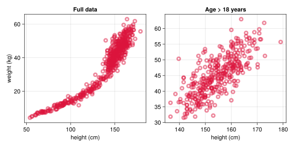
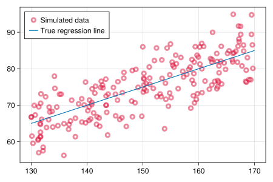
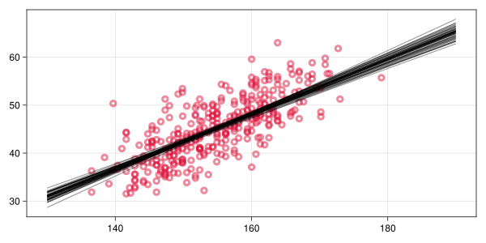

using HTTP
using CSV
using DataFrames
using DataFramesMeta
using CairoMakie
using DistributionsStatistical Rethinking
Week 2
Get and Inspect Data
In the week 2 lecture, we learn techniques of linear regression in the investigation of the relationships between height, weight, age and sex. We start by writing a function to download the data used in the lecture from its GitHub repository directly into a DataFrame.
function download_data(dataset)
repo = "https://raw.githubusercontent.com/rmcelreath/rethinking/master/data/"
link = repo * dataset
file = HTTP.download(link)
CSV.read(file, DataFrame)
end;df = download_data("Howell1.csv");┌ Warning: Reading one byte at a time from HTTP.Stream is inefficient.
│ Use: io = BufferedInputStream(http::HTTP.Stream) instead.
│ See: https://github.com/BioJulia/BufferedStreams.jl
└ @ HTTP.Streams C:\Users\Jakob\.julia\packages\HTTP\z8l0i\src\Streams.jl:240┌ Info: Downloading
│ source = "https://raw.githubusercontent.com/rmcelreath/rethinking/master/data/Howell1.csv"
│ dest = "C:\\Users\\Jakob\\AppData\\Local\\Temp\\Howell1.csv"
│ progress = NaN
│ time_taken = "1.39 s"
│ time_remaining = "NaN s"
│ average_speed = "4.613 KiB/s"
│ downloaded = "6.426 KiB"
│ remaining = "∞ B"
└ total = "∞ B"
┌ Info: Downloading
│ source = "https://raw.githubusercontent.com/rmcelreath/rethinking/master/data/Howell1.csv"
│ dest = "C:\\Users\\Jakob\\AppData\\Local\\Temp\\Howell1.csv"
│ progress = NaN
│ time_taken = "1.82 s"
│ time_remaining = "NaN s"
│ average_speed = "6.560 KiB/s"
│ downloaded = "11.919 KiB"
│ remaining = "∞ B"
└ total = "∞ B"We create a second dataset containing only adults, as the growth dynamics of children result in a quite different relationship between weight and height:
df18 = @rsubset(df, :age > 18);Here’s a plot of the full dataset and the adults-only dataset sidy-by-side:
Code
plotargs = (color=(:black, 0.0), strokewidth=4, strokecolor=(:crimson, .5))
fig = Figure(resolution=(800, 400))
ax1 = Axis(fig[1,1]; title="Full data", ylabel="weight (kg)", xlabel="height (cm)")
ax2 = Axis(fig[1,2]; title="Age > 18 years", xlabel="height (cm)")
scatter!(ax1, df.height, df.weight; plotargs...)
scatter!(ax2, df18.height, df18.weight; plotargs...)
fig
Modeling the Data Generating Process
For the adults-only data, a simple linear regression model seems to capture the relationship between height and weight well. There are two equivalent ways to specify such a model. The first uses the direct specification of a distribution for our outcome observations:
\[ \begin{align} \textrm{weight}_i &\sim \textrm{Normal}(\mu_i, \sigma) \\ \mu_i &= \alpha + \beta \textrm{height}_i \end{align} \]
The second way instead places the distribution on the errors or residuals (\(\epsilon_i\)), i.e., the deviations of the observations from the regression line:
\[ \begin{align} \textrm{weight}_i &= \alpha + \beta \textrm{height}_i + \epsilon_i \\ \epsilon_i &\sim \textrm{Normal}(0, \sigma) \end{align} \]
As for the globe tossing model in week 1, we specify a simulation procedure for this model to generate fake data for some height and known values of the parameters. We chose the second of the two above representations by generating a mean zero residual and adding it to the regression line at some height \(H\):
function simulate_weight(H; β, σ)
U = rand(Normal(0, σ))
β*H + U
end;Note that a full specification usually also includes the regression line intercept (often denoted \(\alpha\)), which is implicitly set to zero in this simulation, i.e., a person with height zero is assumed to have weight zero.
With this function, we can, e.g., simulate the weight of a person that is 1,58m tall. If you run the function multiple times it will return different values. This is the case due to the DGP’s inherent randomness, controlled here by \(\sigma\):
simulate_weight(158; β=0.5, σ=5)76.90076300060447heights = rand(Uniform(130, 170), 200)
weights = simulate_weight.(heights; β=0.5, σ=5)
scatter(heights, weights; figure=(;resolution=(600, 400)), label = "Simulated data", plotargs...)
lines!([130, 170], [130, 170] .* 0.5; label = "True regression line")
axislegend(position=:lt); current_figure()
Bayesian Inference
We are now ready to estimate the unknown parameters specifying the relationship between height and weight based on observed data. In the context of Bayesian inerence, this means that we need to specify the joint distribution, or equivalently the likelihood and prior. In Julia, one way to do this is to use the probabilistic programming language Turing.jl:
using Turing
using Optim
using StatsBase: vcov
using LinearAlgebra
using StructArrays@model function linear_regression(weights, heights)
# Prior
α ~ Normal(0, 10)
β ~ Normal(0, 10)
σ ~ Exponential(3)
# Likelihood
for i in eachindex(weights)
weights[i] ~ Normal(α + β*heights[i], σ)
end
end;For models of intermediate complexity, the lecture uses the quadratic or laplace approximation, which approximates the posterior distribution with a multivariate normal centered at its mode. The mode, i.e., the set of parameters for which the posterior density is maximized, can be found with some numerical optimization procedure:
function quadratic_approximation(model)
est = optimize(model, MAP())
cov = Symmetric(vcov(est).array)
MvNormal(est.values.array, cov)
end;With this in place, we can now instantiate the model and produce a fit with the quadratic approximation:
model = linear_regression(df18.weight, df18.height);fit = quadratic_approximation(model)FullNormal(
dim: 3
μ: [-42.72276499925268, 0.5676940648986761, 4.257576192003125]
Σ: [17.56788069979583 -0.11331631032764365 0.09179910304229999; -0.11331631032764365 0.0007330978295219955 -0.0005921225497363611; 0.09179910304229999 -0.0005921225497363611 0.02651452713237138]
)Because the result is a distribution (a multivariate normal, as mentioned above), we can use the usual interface to, e.g., draw random samples from the posterior via rand(). We here wrap this into a small helper function which adds parameter names to the resulting random samples and wraps them into a StructArray for easier processing:
function posterior_samples(fit; S=1000)
r = rand(fit, S)
r = map(eachcol(r)) do s
NamedTuple{(:α, :β, :σ)}(s)
end
StructArray(r)
end;With this function, it is now easy to draw a number regression lines from the posterior distribution and plot them with our data:
function plot_model_and_data(heights, weights, fit)
fig = Figure(resolution=(800, 400))
ax = Axis(fig[1,1])
scatter!(ax, heights, weights; plotargs...)
samples = posterior_samples(fit; S=50)
for s in samples
lines!(ax, [130, 190], s.α .+ [130, 190] .* s.β; color=(:black, .4))
end
fig
end; plot_model_and_data(df18.height, df18.weight, fit)
Digression: Building an unnormalized posterior density by hand
For inference, Turing turns the model specification into a function evaluating the log joint for a given set of parameter values, which can then be used by some inference algorithm (such as the quadratic approximation). Instead of using the Turing specification, we could also build this function by hand.
We start with the (log) likelihood, which for a given set of parameter values is just the sum of the log probability densities of each observation’s weight under a normal distribution, with the mean given by the regression line induced by parameters \(\alpha\) and \(\beta\) at that observation’s height and residual standard deviation \(\sigma\):
function loglikelihood(α, β, σ; weights, heights)
sum(eachindex(weights)) do i
logpdf(Normal(α + β*heights[i], σ), weights[i])
end
end;We pick a set of parameter values with which to evaluate our function:
α, β, σ = 0, 0.5, 5(0, 0.5, 5)loglikelihood(α, β, σ; weights, heights)-602.3332097464596Similarly, the prior evaluates the log density for each parameter value under the corresponding prior distribution:
function logprior(α, β, σ)
logpdf(Normal(0,10), α) +
logpdf(Normal(0,10), β) +
logpdf(Exponential(3), σ)
end;logprior(α, β, σ)-9.209576207732212The log joint is then just the sum of the log likelihood and the log prior:
function logjoint(α, β, σ; weights, heights)
loglikelihood(α, β, σ; weights, heights) + logprior(α, β, σ)
end;logjoint(α, β, σ; weights, heights)-611.5427859541918